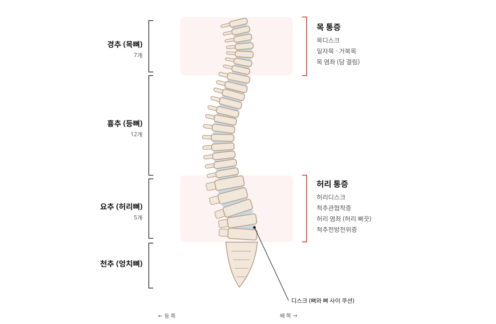
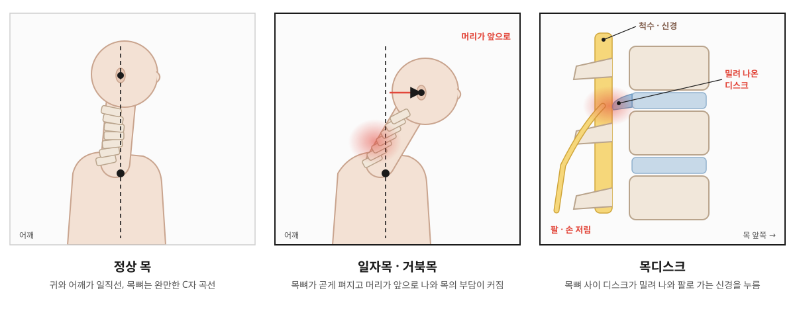
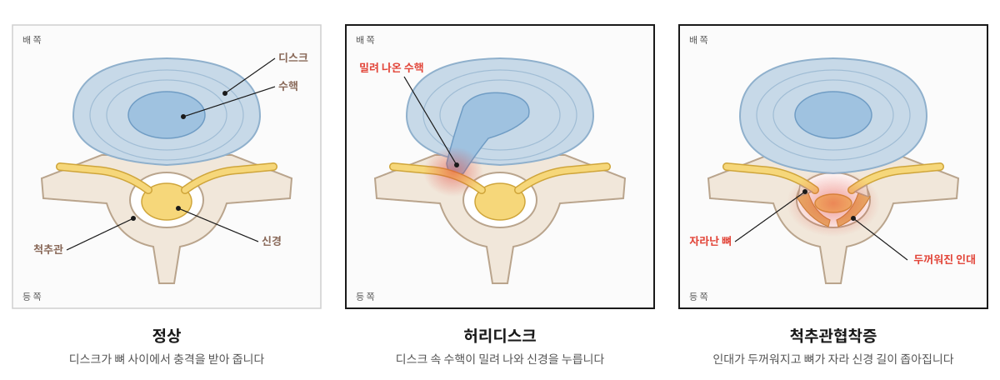

01
목디스크
목뼈 사이 디스크가 밀려 나와 신경을 누르는 상태입니다. 고개를 오래 숙이는 자세와 맞지 않는 베개가 쌓여 생기기 쉽습니다.
이런 증상 · 목·어깨 통증, 팔과 손 저림, 손에 힘이 빠짐, 두통
홈 > 통증 > 척추 질환
목부터 허리까지, 통증을 만든 원인을 찾아 치료합니다
SPINE
척추는 목뼈 7개, 등뼈 12개, 허리뼈 5개가 차례로 쌓이고 그 아래를 엉치뼈가 받치는 구조입니다. 뼈와 뼈 사이에는 충격을 받아 주는 디스크가 있고, 주변의 근육과 인대가 척추를 단단히 붙잡아 줍니다.
오래 앉아 있거나 고개를 숙이는 자세, 무거운 물건을 드는 습관이 쌓이면 이 균형이 무너지며 목과 허리에 통증이 생깁니다. 디스크나 좁아진 척추관이 신경을 누르면 팔이나 다리까지 저림이 퍼지기도 합니다.
갈창림한의원은 아픈 곳과 함께 통증을 만든 자세와 몸의 균형까지 살펴 치료합니다.

CONDITIONS

01
목뼈 사이 디스크가 밀려 나와 신경을 누르는 상태입니다. 고개를 오래 숙이는 자세와 맞지 않는 베개가 쌓여 생기기 쉽습니다.
이런 증상 · 목·어깨 통증, 팔과 손 저림, 손에 힘이 빠짐, 두통
02
앞쪽으로 완만하게 휘어 있어야 할 목뼈가 곧게 펴지거나 머리가 앞으로 나온 상태입니다. 스마트폰과 컴퓨터를 오래 보는 자세가 주된 원인입니다.
이런 증상 · 뒷목·어깨 결림, 두통, 눈의 피로, 쉽게 지침
03
갑자기 고개를 돌리거나 불편한 자세로 자고 난 뒤 목 주변 근육과 인대가 놀라 생깁니다.
이런 증상 · 고개를 돌리기 어려움, 움직일 때 찌르는 통증, 어깨 뭉침
04
허리뼈 사이 디스크 속 수핵이 밀려 나와 신경을 누르는 상태입니다. 오래 앉아 있는 습관, 무거운 물건을 드는 동작, 갑작스러운 충격이 원인이 됩니다.
이런 증상 · 허리 통증, 엉덩이에서 다리로 뻗치는 통증·저림
05
나이가 들며 인대가 두꺼워지고 뼈가 자라 신경이 지나는 길(척추관)이 좁아진 상태입니다.
이런 증상 · 걸으면 다리가 저려 쉬었다 가야 함, 숙이면 편해짐
06
무거운 물건을 들거나 갑자기 몸을 비틀 때 허리 근육과 인대가 늘어나 생깁니다.
이런 증상 · 갑자기 시작된 통증, 허리를 펴거나 숙이기 어려움
07
위아래 허리뼈가 어긋나 위쪽 뼈가 앞으로 밀려 나온 상태입니다. 주변 근육이 약해지면 더 불안정해집니다.
이런 증상 · 허리를 뒤로 젖히거나 오래 서 있을 때 통증, 다리 저림
DISC & STENOSIS
둘 다 허리와 다리가 아프지만, 신경이 눌리는 이유가 달라 아픈 때와 편한 자세도 다릅니다.

| 허리디스크 | 척추관협착증 | |
|---|---|---|
| 흔히 나타나는 나이 | 20~50대에도 흔함 | 50대 이후에 많음 |
| 더 아픈 때 | 오래 앉아 있거나 허리를 숙일 때 | 오래 서 있거나 걸을 때 |
| 편해지는 자세 | 누워서 쉴 때 | 허리를 앞으로 숙이거나 앉아서 쉴 때 |
| 다리 증상 | 주로 한쪽 다리로 뻗치는 통증·저림 | 걸으면 다리가 저리고 무거워져 쉬었다 걸어야 함 |
※ 일반적인 경향이며 사람마다 다르게 나타날 수 있고, 두 가지가 함께 있는 경우도 있습니다.
TREATMENT
굳은 근육을 풀고, 틀어진 균형을 바로잡고, 몸 안의 회복을 돕는 치료를 상태에 맞게 함께 진행합니다.
01 · 통증 완화
굳은 근육을 풀고 염증을 가라앉힙니다
목과 허리 주변의 굳은 근육과 아픈 자리에 침을 놓아 긴장을 풉니다. 약침은 한약재에서 얻은 약침액을 통증 부위에 넣어 염증과 통증을 가라앉히는 데 도움을 줍니다.
이런 분께 · 근육이 뭉치고 찌르는 통증이 있는 분
02 · 균형 회복
틀어진 척추와 골반을 바로잡습니다
한의사가 손으로 척추와 골반, 주변 근육을 밀고 당겨 틀어진 정렬을 바로잡고 굳은 관절의 움직임을 되찾습니다. 디스크와 신경에 걸리는 부담을 줄이는 데 도움이 됩니다.
이런 분께 · 자세가 틀어지고 목·허리가 뻣뻣한 분
03 · 몸 안쪽 회복
약해진 근육과 인대의 회복을 돕습니다
염증과 어혈을 풀고 약해진 근육과 인대가 회복되도록 체질과 상태에 맞춰 처방합니다. 오래된 통증으로 지친 몸의 회복도 함께 살핍니다.
이런 분께 · 통증이 오래되었거나 자주 재발하는 분
04 · 순환 · 이완
순환을 돕고 굳은 근육을 풀어 줍니다
핫팩과 ICT로 깊은 곳의 근육을 풀고, 견인기로 목과 허리 뼈 사이의 압박을 줄입니다. 뜸과 부항은 막힌 순환을 풀어 회복을 돕습니다.
이런 분께 · 근육이 굳고 몸이 무거운 분
FLOW
물리치료로 굳은 근육을 먼저 따뜻하게 풀어 준 뒤 침·약침과 추나를 진행합니다.
※ 그날의 몸 상태에 따라 일부 치료는 달라질 수 있습니다.
CAUTION
아래와 같은 증상은 신경이 크게 눌렸거나 다른 원인이 있을 수 있어, 영상 검사가 가능한 병원에서 먼저 확인하는 것이 안전합니다.
CARE
※ 치료에 대한 반응과 회복 속도는 개인차가 있습니다.
FAQ
모든 디스크가 수술이 필요한 것은 아닙니다. 다만 다리 힘이 빠지거나 대소변 장애가 있는 경우처럼 수술이 필요할 수 있는 경우도 있어, 진찰 후 필요하면 정밀 검사를 먼저 권해 드립니다.
꼭 그렇지는 않습니다. 진찰로 상태를 확인한 뒤 치료를 시작할 수 있습니다. 이미 받은 검사 결과가 있다면 가져오시면 진료에 도움이 됩니다.
관절을 바로잡을 때 소리가 나거나 순간 뻐근할 수 있지만, 상태를 살피며 힘을 조절해 진행합니다. 느끼는 정도는 개인차가 있습니다.
네. 추나요법은 건강보험이 적용됩니다. 적용 대상과 횟수, 본인 부담은 기준에 따라 달라지니 내원하시면 안내해 드립니다.
통증이 심한 초기에는 자주 치료받는 것이 좋고, 좋아질수록 간격을 넓혀 갑니다. 진찰 후 지금 상태에 맞는 내원 간격을 안내해 드립니다.
TIME